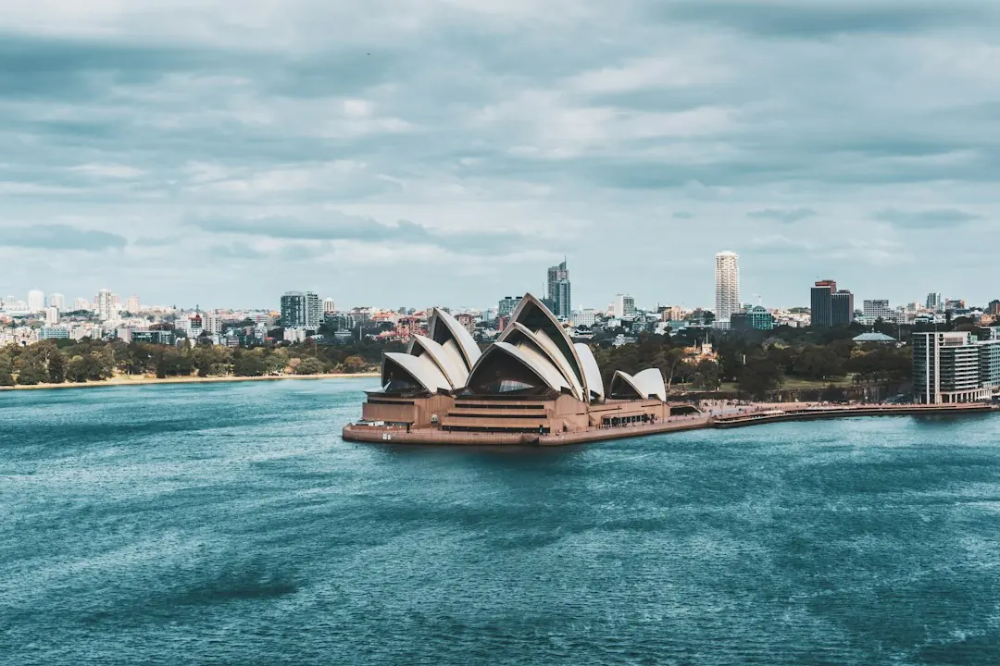

A Sydney switchboard upgrade may involve a targeted safety switch installation, fuse box replacement or full board replacement. Scope can change when electricians inspect asbestos or mica backing panels, consumer mains, meter box defects and three phase supply. Ask what work is required, whether Ausgrid or Endeavour Energy coordination is involved, and whether testing plus a Certificate of Compliance for Electrical Work are included.
For homeowners comparing switchboard upgrade cost sydney options, the useful starting point is to identify the board's condition, the electrical load it must support and the work that may be needed after inspection.
Switchboard Upgrade Cost Sydney Explained
Switchboard Upgrades Sydney describes an upgrade as replacing an ageing fuse box or crowded board with modern circuit breakers and safety switches. That does not mean every property needs the same work. A board with old rewireable ceramic fuses may need broader replacement, while another home may need a targeted improvement after assessment.
Many Sydney homes built before the 1980s still have boards designed for lighter household loads. Air conditioning, induction cooktops, solar equipment, batteries and EV chargers can increase the electrical load the board must support. Ask whether the existing installation is suitable for both current use and planned equipment.
Before requesting a quote, record what you can see without disturbing the installation:
- ceramic fuses or modern breakers;
- missing safety switches;
- scorch marks, buzzing, a burning smell or repeated tripping;
- a crowded board or signs that the meter area needs attention.
Choose between a targeted fix and replacement
Safety switch installation, surge protection, fuse box replacement and full switchboard replacement are separate jobs. A targeted fix may address one identified issue, while full replacement may be considered where the board is ageing, crowded or unable to accommodate planned equipment.
Ask the electrician to separate essential work from future additions. If solar panels, a battery, an EV charger or a renovation is planned, check whether the board has spare circuit space and enough supply capacity before committing to the extra equipment. A small repair may not resolve limitations elsewhere in the installation.
For replacement, ask whether the quote includes new breakers, safety switches, testing and the required compliance certificate. For a safety switch job, ask which circuits will be protected and whether existing defects need separate attention.
Understand the cost signals before comparing quotes
A price cannot be judged fairly from the board alone. The published guide identifies asbestos or mica backing panels, consumer mains, meter box defects and three phase supply as factors that can change the scope once the installation is assessed. These issues may also affect whether network coordination is needed.
Use the quote to clarify the physical work rather than comparing only a headline figure. Ask:
- Is this a complete replacement or a limited repair?
- Are consumer mains, the meter panel or a defect notice included?
- Does the proposed board allow room for future solar, battery or EV circuits?
- Will power need to be isolated, and will Ausgrid or Endeavour Energy be involved?
- Are testing, certification and reinstatement work included?
A written scope helps compare quotes where one includes meter or supply work and another covers only the board itself.
NSW compliance and scheduling questions
Electrical work in NSW has to be done by someone holding a NSW electrical licence. The guide explains that completed work is tested and certified with a Certificate of Compliance for Electrical Work, known as a CCEW. The certificate is lodged through the Building Commission NSW eCert portal and a copy goes to the customer.
Ask who will perform the work, what certification you will receive and whether the certificate applies to the full scope described in the quote. Keep the document with the property records, especially if the work includes a meter panel, consumer mains or supply changes.
Scheduling can depend on the local network area. Ausgrid and Endeavour Energy may need to coordinate meter or supply work depending on the suburb. Confirm who arranges that coordination, whether an outage is expected and what part of the job can proceed separately.
Who this guide applies to
This guide is for Sydney homeowners and property decision makers dealing with an older fuse box, repeated tripping, visible board damage, a crowded switchboard or new electrical equipment. It is also relevant when a meter box defect or three phase question appears during an inspection.
It is not a substitute for an on site electrical assessment. Do not remove covers or disturb a dark backing panel. Instead, describe what you can see and ask a licensed electrician to assess the board. The guide to switchboard replacement in Sydney provides another way to frame the repair or replacement decision.
The most useful enquiry includes the property type, suburb, visible fuse or breaker arrangement, symptoms such as buzzing or tripping, and any planned solar, battery, EV charger or renovation work.
- Inspect without opening the board. Note visible fuses, breakers, scorch marks, buzzing, smells, warm spots or repeated trips without disturbing the installation.
- Describe present and future loads. Mention air conditioning, induction cooking, solar, batteries, EV charging or renovation plans.
- Request a defined scope. Ask whether the work is a targeted fix, fuse box replacement, full replacement or supply related upgrade.
- Confirm compliance and scheduling. Check the electrician's NSW licence, CCEW arrangements and any Ausgrid or Endeavour Energy coordination.
| Option | May suit | Question to ask |
|---|---|---|
| Safety switch installation | A home needing circuit shock protection | Which circuits will be protected? |
| Fuse box replacement | An older board with rewireable ceramic fuses | Are breakers, safety switches and testing included? |
| Full switchboard replacement | A crowded or ageing board needing broader renewal | Does the scope include meter, mains and certification issues? |
| Three phase upgrade | A property where supply capacity needs assessment | Is three phase required, or is a larger single phase board suitable? |
Common questions
Does an older Sydney home automatically need a full replacement? No. The board needs an assessment. Older homes with ceramic fuses may need replacement, but the appropriate scope depends on the board, wiring, supply and planned loads.
What signs should be included in an enquiry? Mention frequent tripping, blown rewireable fuses, scorch marks, buzzing, a burning smell, warm spots or a crowded layout. Also mention a dark backing panel without disturbing it.
Why can two switchboard quotes differ? The scope may change because of asbestos or mica backing panels, consumer mains, meter box defects, three phase supply or network coordination. Ask each provider to state what is included.
Is a CCEW part of the finished job? The published guide says electrical work is tested and certified with a Certificate of Compliance for Electrical Work, lodged through the Building Commission NSW eCert portal and copied to the customer.
What should be checked before adding an EV charger or solar equipment? Ask whether the switchboard has spare circuit space and enough supply capacity for the planned equipment. The assessment should consider the load the home will carry next, not only today.
This guide covers switchboard assessment, upgrade options, quote questions, NSW certification and planning for future electrical loads in Sydney.